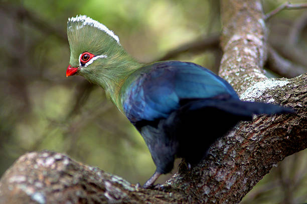

Hindili olarak da bilinen turuko kuşu (Meleagris gallopavo), Kuzey Amerika kökenli, iri yapısı ve gösterişli tüyleriyle tanınan bir kümes hayvanıdır. Ortalama 70–120 cm uzunluğa ulaşabilen bu kuşlar, geniş gövdeleri, yelpaze biçimli kuyruğu ve erkek bireylerde belirginleşen kırmızı gerdan ile dikkat çeker. Doğal ortamlarında böcek, tohum, meyve ve küçük bitkilerle beslenirler; evcil yetiştiricilikte ise tahıl ve dengeli yemlerle beslenmeleri sağlanır. Erkek hindiler, üreme döneminde kabarık tüyleri ve “gobble” adı verilen sesleriyle dişileri cezbetmeye çalışır. Sosyal ve sürü halinde yaşayan bu kuşlar, hem et üretimi hem de kültürel sembol olarak büyük önem taşır. Doğru bakım koşullarında 10 yıla kadar yaşayabilen hindiler, yalnızca besin kaynağı olarak değil, aynı zamanda görkemli duruşlarıyla da dikkat çeker; özellikle Amerika kıtasında Şükran Günü gibi kültürel etkinliklerde simgesel bir yere sahiptir.